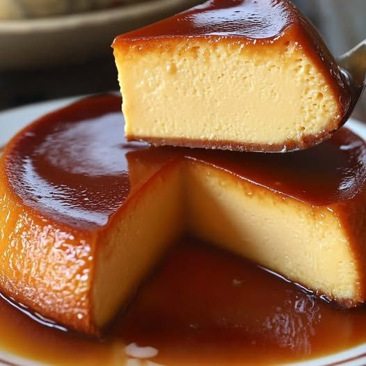
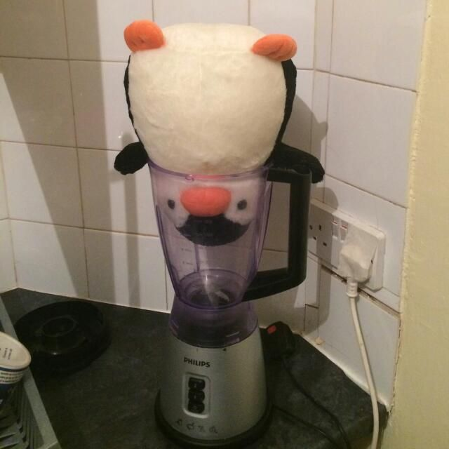

Popular
Bienvenido a mi blog culinario!
Recetas tradicionales de postres deliciosos y faciles de hacer
Explorar RecetasRecetas Destacadas
 Dulce
Dulce
 Dulce
Dulce
Arroz con Leche
Aprende a preparar arroz con leche, postre facil y delisioso para todos los gustos.
Ver RecetaCategorías
Postres
(3)Panadería
(0)Helados
(0)Caseros
(0)Sobre Mí
¡Hola! Mi nombre es Perla, y soy una gran fanatica de los postres, aunque he de admitir que no soy gran fanatica de lo dulce, la serie de postres que presento en este vlog, con mis favoritos, ya que mi abuelita me mostro como preparlos, pero he de admitir tambien que buana cocinera no soy, sim embargo quien tiene buena mano, es mi tia, y siempre que los prepara soy la primera en querer un poco.
